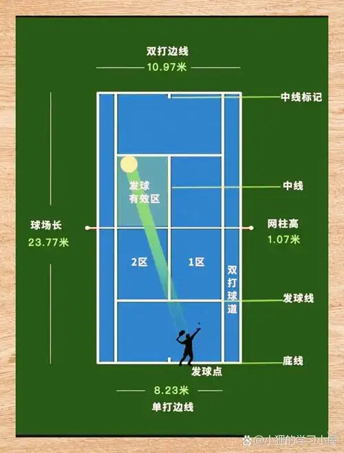

网球基础知识
网球是一项在全球范围内广受欢迎的球类运动，它起源于19世纪的英国，后来逐渐发展成为一项职业运动。以下是一些网球的基础知识：
1. 场地：
- 单打场地：长23.77米（78英尺），宽8.23米（27英尺）。
- 双打场地：在单打场地的基础上，每边增加1.37米（4.5英尺）。
- 网高：中央高度0.914米（3英尺），两侧高度1.07米（3.5英尺）。 
2. 球：
- 网球通常由橡胶或合成材料制成，外层包裹着毛毡或尼龙纤维。
- 球的直径约为6.54厘米（2.56英寸）。
3. 拍子：
- 网球拍由框架、网线和手柄组成。
- 材质包括碳纤维、铝合金、钛合金等。
4. 比赛规则：
- 比赛分为单打和双打。
- 比赛采用计分制，每局（Game）需要至少赢得4分，且比对手多2分。
- 比赛通常采用三盘两胜制（Best of Three）或五盘三胜制（Best of Five）。
5. 计分系统：
- 0分：Love
- 1分：15
- 2分：30
- 3分：40
- 4分：Deuce（平分）
- 赢得一局需要至少40分，且比对手多2分。
6. 发球：
- 发球方站在底线后，将球抛起后用球拍击球，球必须落在对方场地的发球区内。
- 发球失误（Foot fault）：发球时脚触线或完全在底线外。
7. 击球：
- 球员必须在球落地一次后击球。
- 球员不能触网或进入对方场地。
8. 换边：
- 每盘结束后，球员会换边。
9. 决胜局（Tiebreak）：
- 在某些比赛中，当比分达到6-6时，会进行决胜局，先赢得7分且至少领先2分的球员赢得该盘。
10. 大满贯赛事：
- 澳大利亚网球公开赛、法国网球公开赛、温布尔登网球锦标赛、美国网球公开赛。